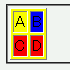
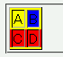

表を構成する要素（table, tdなど）に背景色を指定しても反映されないことがある。
<table border="1" style="background: #ffff00;"> <tr><td>A</td><td style="background: #0000ff;">B</td></tr> <tr style="background: #ff0000;"><td>C</td><td>D</td></tr> </table>
| A | B |
| C | D |
表全体の背景色を空色、右上のセル（B）の背景色を青色、最下列（C,D）の背景色を赤色に設定しています。
WinIE6.0での表示（標準モード）
N6.2.3での表示（標準モード）
N6.2.3のスクリーンショットでtr要素に指定した背景色指定が表の枠線にまで効いていますが、Moz1.0ではセル内部のみを塗りつぶすように（WinIE6と同じ）変更されています。
Moz1.0及びN6.2.3では背景色指定が正しく反映または継承されています。
ネスケ6、
TABLEタグに背景色を指定しても無視される。